9th Grade Geography Worksheets
394 Geography resources for 9th Grade, ready to print: Miami, Messico, Melbourne, Mauritius and more. Each resource page shows the grade range, page count and a preview and links straight to the product on TpT.
394 resources
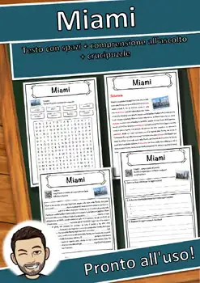
Miami – Italian Reading Comprehension Worksheet (Scheda): Cloze & Listening
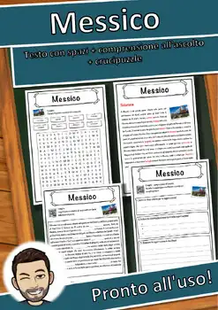
Messico – Italian Reading Comprehension Worksheet (Scheda): Cloze & Listening
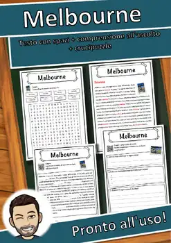
Melbourne – Italian Reading Comprehension Worksheet (Scheda): Cloze & Listening
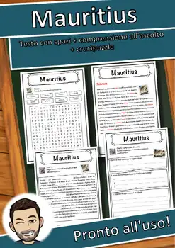
Mauritius – Italian Reading Comprehension Worksheet (Scheda): Cloze & Listening
Mauritania – Italian Reading Comprehension Worksheet (Scheda): Cloze & Listening
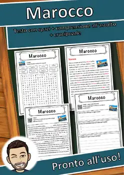
Marocco – Italian Reading Comprehension Worksheet (Scheda): Cloze & Listening
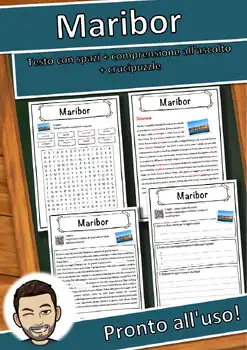
Maribor – Italian Reading Comprehension Worksheet (Scheda): Cloze & Listening
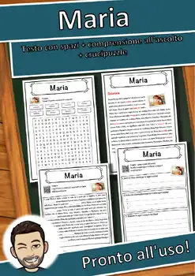
Maria – Italian Reading Comprehension Worksheet (Scheda): Cloze & Listening
Maometto – Italian Reading Comprehension Worksheet (Scheda): Cloze & Listening
Manila – Italian Reading Comprehension Worksheet (Scheda): Cloze & Listening
Manchester – Italian Reading Comprehension Worksheet (Scheda): Cloze & Listening
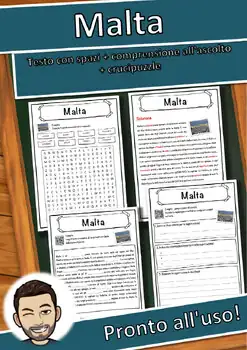
Malta – Italian Reading Comprehension Worksheet (Scheda): Cloze & Listening
Mali – Italian Reading Comprehension Worksheet (Scheda): Cloze & Listening
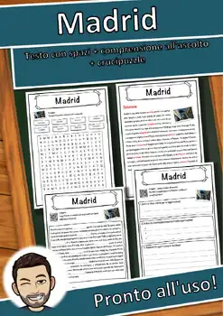
Madrid – Italian Reading Comprehension Worksheet (Scheda): Cloze & Listening
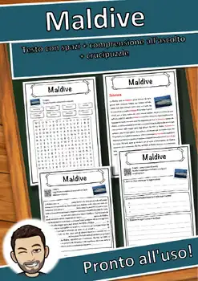
Maldive – Italian Reading Comprehension Worksheet (Scheda): Cloze & Listening
Malaysia – Italian Reading Comprehension Worksheet (Scheda): Cloze & Listening
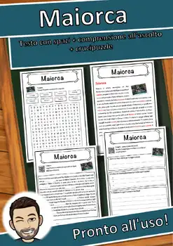
Maiorca – Italian Reading Comprehension Worksheet (Scheda): Cloze & Listening
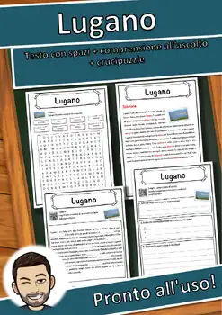
Lugano – Italian Reading Comprehension Worksheet (Scheda): Cloze & Listening
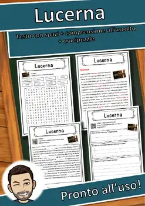
Lucerna – Italian Reading Comprehension Worksheet (Scheda): Cloze & Listening
Lubiana – Italian Reading Comprehension Worksheet (Scheda): Cloze & Listening
Losanna – Italian Reading Comprehension Worksheet (Scheda): Cloze & Listening
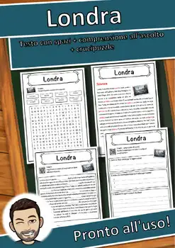
Londra – Italian Reading Comprehension Worksheet (Scheda): Cloze & Listening
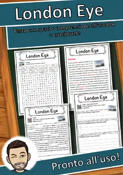
London Eye – Italian Reading Comprehension Worksheet (Scheda): Cloze & Listening
Liverpool – Italian Reading Comprehension Worksheet (Scheda): Cloze & Listening
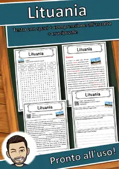
Lituania – Italian Reading Comprehension Worksheet (Scheda): Cloze & Listening
Lisbona – Italian Reading Comprehension Worksheet (Scheda): Cloze & Listening
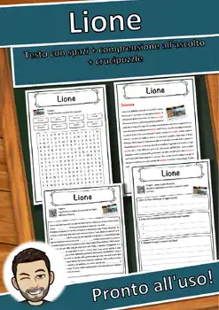
Lione – Italian Reading Comprehension Worksheet (Scheda): Cloze & Listening
Lago – Italian Reading Comprehension Worksheet (Scheda): Cloze & Listening
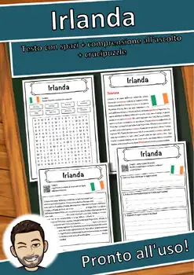
Irlanda – Italian Reading Comprehension Worksheet (Scheda): Cloze & Listening
Giostra – Italian Reading Comprehension Worksheet (Scheda): Cloze & Listening
Giordania – Italian Reading Comprehension Worksheet (Scheda): Cloze & Listening
Ginevra – Italian Reading Comprehension Worksheet (Scheda): Cloze & Listening
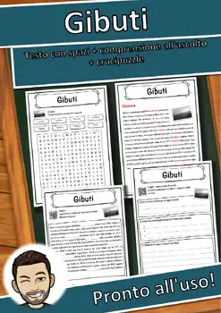
Gibuti – Italian Reading Comprehension Worksheet (Scheda): Cloze & Listening
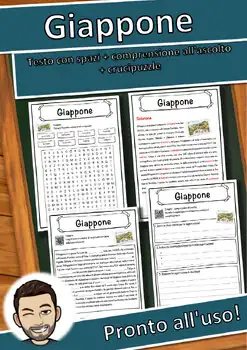
Giappone – Italian Reading Comprehension Worksheet (Scheda): Cloze & Listening
Giamaica – Italian Reading Comprehension Worksheet (Scheda): Cloze & Listening
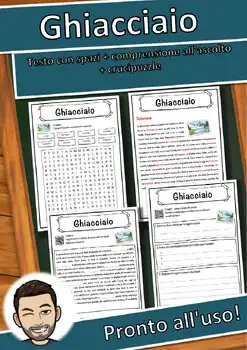
Ghiacciaio – Italian Reading Comprehension Worksheet (Scheda): Cloze & Listening
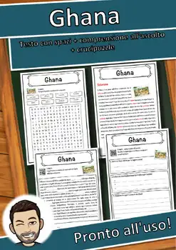
Ghana – Italian Reading Comprehension Worksheet (Scheda): Cloze & Listening
Etiopia – Italian Reading Comprehension Worksheet (Scheda): Cloze & Listening
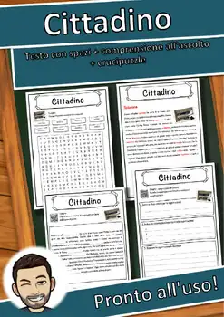
Cittadino – Italian Reading Comprehension Worksheet (Scheda): Cloze & Listening
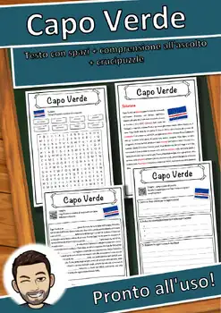
Capo Verde – Italian Reading Comprehension Worksheet (Scheda): Cloze & Listening
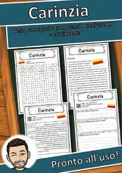
Carinzia – Italian Reading Comprehension Worksheet (Scheda): Cloze & Listening

Georgia – Italian Reading Comprehension Worksheet (Scheda): Cloze & Listening

Genova – Italian Reading Comprehension Worksheet (Scheda): Cloze & Listening

Gange – Italian Reading Comprehension Worksheet (Scheda): Cloze & Listening

Gambia – Italian Reading Comprehension Worksheet (Scheda): Cloze & Listening

Galápagos – Italian Reading Comprehension Worksheet (Scheda): Cloze & Listening

Paraguay – Italian Reading Comprehension Worksheet (Scheda): Cloze & Listening

Panama – Italian Reading Comprehension Worksheet (Scheda): Cloze & Listening
No resources found – try a different search term or filter.